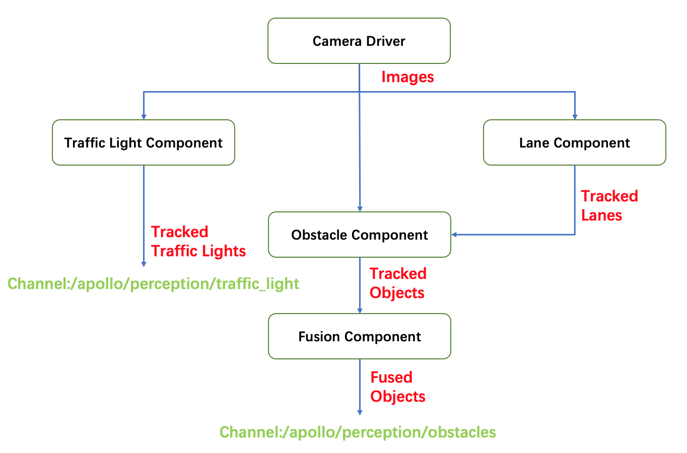
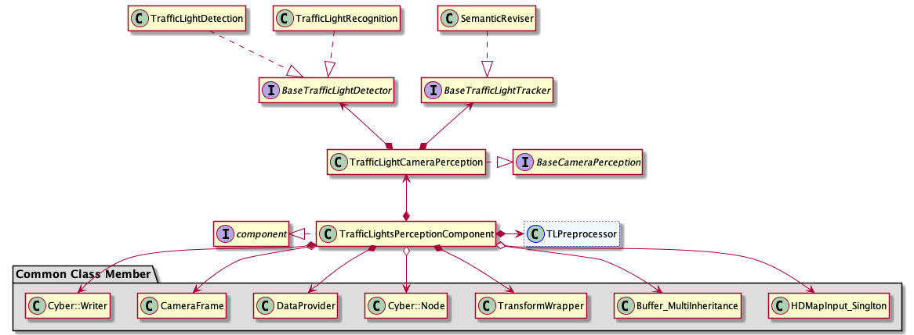

How to add a new camera tracker algorithm
The processing flow of camera perception module is shown below: 
The 2 tracker algorithms introduced by this document were traffic_light_tracker and obstacle_tracker (lane_tracker is reserved but not used so far). These 2 trackers are located in their own component. The architecture of each component is showed below:
Traffic Light: 
Obstacle:

As we can see clearly from above structure, each component has its own abstract class member base_XXX_tracker. Different derived tracker algorithms inherit base_XXX_tracker and implement their main flows to complete the deployment. Next, we will take base_obstacle_tracker as an example to introduce how to add a new camera tracker algorithm. You could also refer to this document if you want to add traffic light tracker.
Apollo has provided one camera tracker algorithm in Obstacle Detection – OMTObstacleTracker. It could be easily changed or replaced by other algorithms. The input of algorithm should be objective obstacle data processed by previous detector, while the output should be matched and tracked objective obstacle data. This document will introduce how to add a new camera tracker algorithm, the basic task sequence is listed below：
Define a class that inherits
base_obstacle_trackerImplement the class
NewObstacleTrackerAdd param proto file for
NewObstacleTrackerUpdate config file to put your tracker into effect
The steps are elaborated below for better understanding:
Define a class that inherits base_obstacle_tracker
All the camera tracker algorithms shall inherit base_obstacle_tracker，which defines a set of interfaces. Here is an example of the tracker implementation:
namespace apollo {
namespace perception {
namespace camera {
class NewObstacleTracker : public BaseObstacleTracker {
public:
NewObstacleTracker();
virtual ~NewObstacleTracker() = default;
bool Init(const ObstacleTrackerInitOptions& options) override;
bool Predict(const ObstacleTrackerOptions &options,
CameraFrame *frame) override;
bool Associate2D(const ObstacleTrackerOptions &options,
CameraFrame *frame) override;
bool Associate3D(const ObstacleTrackerOptions &options,
CameraFrame *frame) override;
bool Track(const ObstacleTrackerOptions& options,
CameraFrame* frame) override;
std::string Name() const override;
}; // class NewObstacleTracker
} // namespace camera
} // namespace perception
} // namespace apollo
The function signature of base_obstacle_tracker is pre-defined：
struct ObstacleTrackerInitOptions : public BaseInitOptions {
float image_width;
float image_height;
};
struct ObstacleTrackerOptions {};
struct CameraFrame {
// timestamp
double timestamp = 0.0;
// frame sequence id
int frame_id = 0;
// data provider
DataProvider *data_provider = nullptr;
// calibration service
BaseCalibrationService *calibration_service = nullptr;
// hdmap struct
base::HdmapStructPtr hdmap_struct = nullptr;
// tracker proposed objects
std::vector<base::ObjectPtr> proposed_objects;
// segmented objects
std::vector<base::ObjectPtr> detected_objects;
// tracked objects
std::vector<base::ObjectPtr> tracked_objects;
// feature of all detected object ( num x dim)
// detect lane mark info
std::vector<base::LaneLine> lane_objects;
std::vector<float> pred_vpt;
std::shared_ptr<base::Blob<float>> track_feature_blob = nullptr;
std::shared_ptr<base::Blob<float>> lane_detected_blob = nullptr;
// detected traffic lights
std::vector<base::TrafficLightPtr> traffic_lights;
// camera intrinsics
Eigen::Matrix3f camera_k_matrix = Eigen::Matrix3f::Identity();
// narrow to obstacle projected_matrix
Eigen::Matrix3d project_matrix = Eigen::Matrix3d::Identity();
// camera to world pose
Eigen::Affine3d camera2world_pose = Eigen::Affine3d::Identity();
EIGEN_MAKE_ALIGNED_OPERATOR_NEW
} EIGEN_ALIGN16; // struct CameraFrame
Implement the class NewObstacleTracker
To ensure the new tracker could function properly, NewObstacleTracker should at least override the interface Init(), Track(), Name() defined in base_obstacle_tracker Init() is resposible for config loading, class member initialization, etc. And Track() will implement the basic logic of algorithm. A concrete NewObstacleTracker.cc example is shown：
Note：Currently, the algorithm pipeline has not been encapsulated into the Track() function of base_obstacle_tracker.h.
Therefore, all the virtual interface should be re-writen.
namespace apollo {
namespace perception {
namespace camera {
bool NewObstacleTracker::Init(const ObstacleTrackerInitOptions& options) {
/*
Initialization of your tracker
*/
}
bool NewObstacleTracker::Track(const ObstacleTrackerInitOptions& options,
CameraFrame *frame) {
/*
Implementation of your tracker
*/
}
bool NewObstacleTracker::Predict(const ObstacleTrackerOptions &options,
CameraFrame *frame) {
/*
Implementation of your tracker -- Predict
*/
}
bool Associate2D(const ObstacleTrackerOptions &options,
CameraFrame *frame){
/*
Implementation of your tracker -- Associate2D
*/
}
bool Associate3D(const ObstacleTrackerOptions &options,
CameraFrame *frame){
/*
Implementation of your tracker -- Associate3D
*/
}
std::string NewObstacleTracker::Name() const {
/*
Return your tracker's name
*/
}
REGISTER_OBSTACLE_TRACKER(NewObstacleTracker); //register the new tracker
} // namespace camera
} // namespace perception
} // namespace apollo
Add param proto file for NewObstacleTracker
Follow the steps below to add parameters for your new camera tracker:
Create the
protofile for parameters according to the requirement of your tracker. If the parameters are compatible, you can use or just modify currentprotodirectly. As an example, you can refer to theprotofile fromomt Trackeratmodules/perception/camera/lib/obstacle/tracker/omt/proto/omt.proto. Remember to include the following content once you finished your definition:syntax = "proto2"; package apollo.perception.camera.NewObstacleTracker; //Your parameters
Refer to
omt_obstacle_trackeratmodules/perception/production/data/perception/camera/models/and create yournew_obstacle_trackerfolder and*.ptfile：Note：The "*.pt" file should have the format defined in step one
Update config file to put your tracker into effect
To use your new camera tracker algorithm in Apollo， you have to config the following files according to your demand:
Refer to the following content to update
modules/perception/production/conf/perception/camera/obstacle.pt,put your*.ptfile created in previous step to the load path:tracker_param { plugin_param{ name : "NewObstacleTracker" root_dir : "/apollo/modules/perception/production/data/perception/camera/models/new_obstacle_tracker" config_file : "*.pt" } }
If you want to modify the structure of
tracker_paramshown in step one or just add a new_param, your can do that atmodules/perception/camera/app/proto/perception.proto:message PluginParam { optional string name = 1; optional string root_dir = 2; optional string config_file = 3; } message TrackerParam { optional PluginParam plugin_param = 1; }
If you create a new
*.ptinstead of usingobstacle.ptgiven in step one， you also have to modifymodules/perception/production/conf/perception/camera/fusion_camera_detection_component.pb.txt. The correspondingprotofile ismodules/perception/onboard/proto/fusion_camera_detection_component.proto：camera_obstacle_perception_conf_dir : "/apollo/modules/perception/production/conf/perception/camera" camera_obstacle_perception_conf_file : "NewObstacleTracker.pt"
Once you finished the above modifications, you new camera tracker should take effect in Apollo.